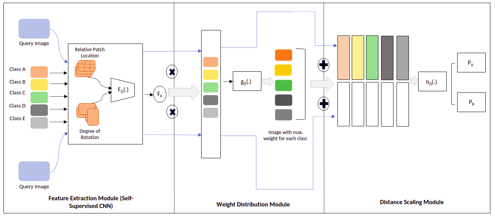

|
I am a pre-final year undergraduate student at VIT Vellore, majoring in Computer Science and Engineering.
Previously, I have had the privilege of working with Prof. Surya Prakash at IIT Indore, Prof. Mickael Coustaty and Prof. Jean-Loup Guillaume at the University of La Rochelle, France. I would be working with Prof. Eric Granger at ETS Montreal in the upcoming summer. |

|
|
I'm interested in computer vision, machine learning, perceptual interfaces, and image processing.
Much of my research is about inferring the physical world (shape, motion, color, light, etc) from images and videos. I also like to focus on interdisciplinary research, applying vision-based methods to innovatiely tackle problems in different fields. |
|  |
Rajat Sahay, Mickael Coustaty arXiv, 2020 arXiv Leveraging Prototypical Networks to learn Euclidian embeddings and classify handwritten Urdu characters using a minimal number of examples. |

|
Rajat Sahay Communicated We use computer vision techniques to insert adversarial colour patches into images without distortion in the form of naturallyy occuring colours within the images. |
|
|
Dec '20 |
I'll be working with Prof. Mickael Coustaty and Prof. Jean-Loup Guillaume at the L3i Laboratoire, University of La Rochelle, France. | ||||
Dec '20 |
My work with Prof. Coustaty on leveraging Prototypical Networks for handwritten Urdu Characters is in preprint. | ||||
Dec '20 |
Excited to be a recipient of the Mitacs Globalink Resarch Scholarship! I would be interning with Prof. Eric Granger at the LIVIA Laboratory, ETS Montreal, Canada over the summer. | ||||
Jun '20 |
Due to the pandemic, I would be remotely beginning my role as a Research Intern with Prof. Mickael Coustaty at the L3i Laboratoire, University of La Rochelle, France. | ||||
Jan '20 |
I'll be beginning my work at CamCann Smart Systems as a Computer Vision Engineer Intern. Looking forward to working with the insanely talented team. | ||||
May '19 |
I'll be starting my internship with Prof. Surya Prakash at the Pattern Analysis and Machine Intelligence Laboratory, Indian Institute of Technology, Indore, India. |

|

|

|

|

|
|
[ Fun Website ]
[ Template ]
|